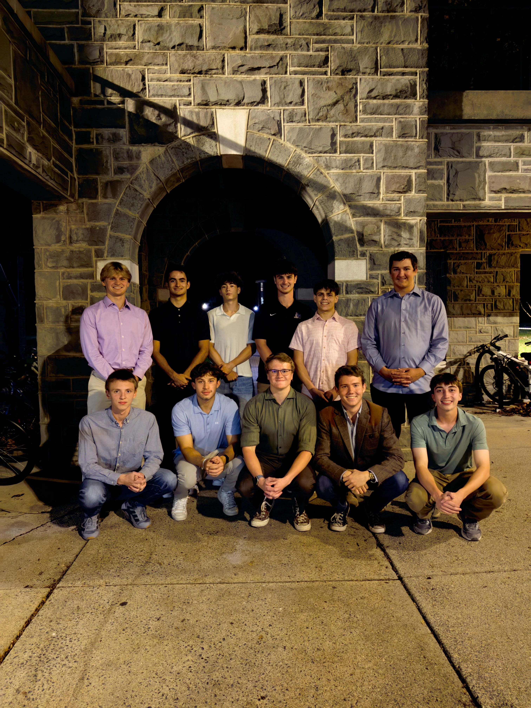
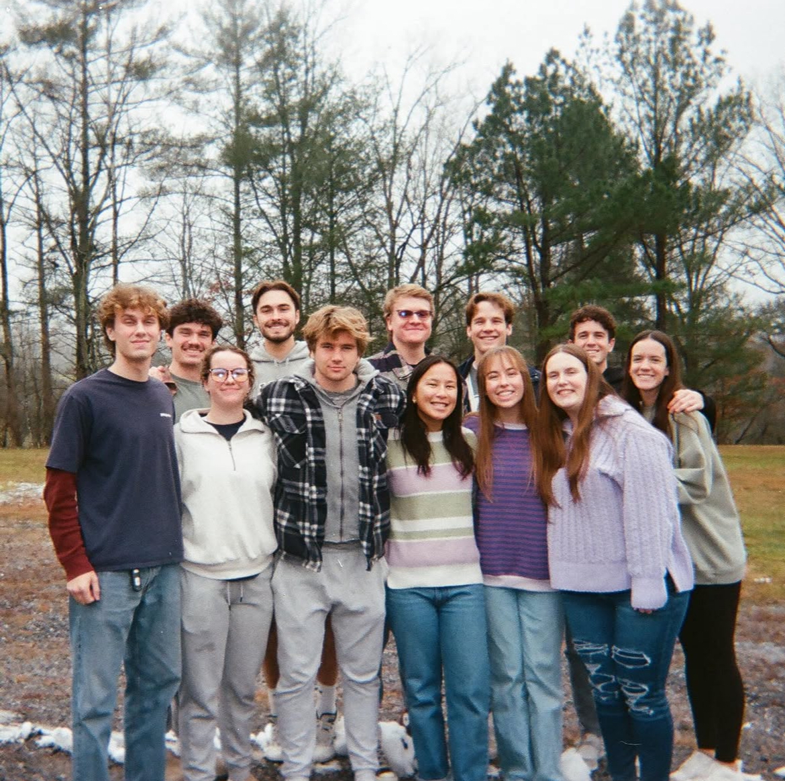
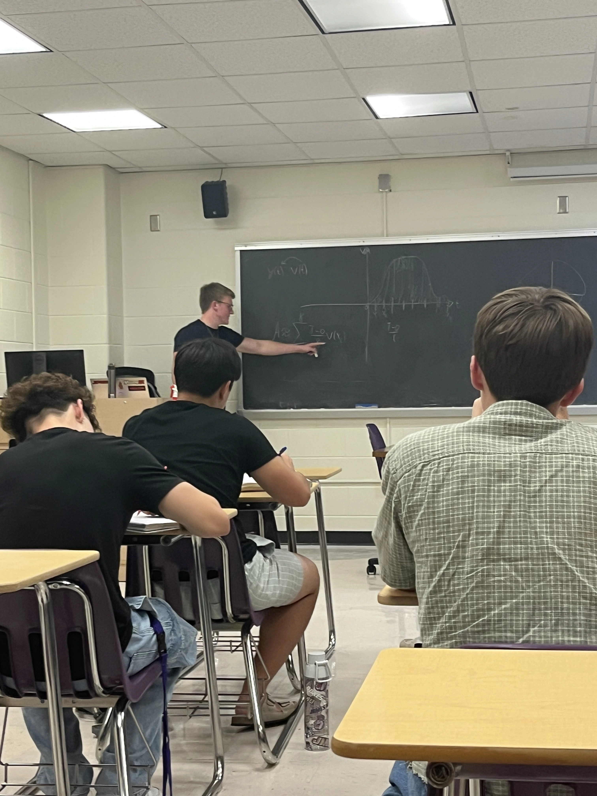
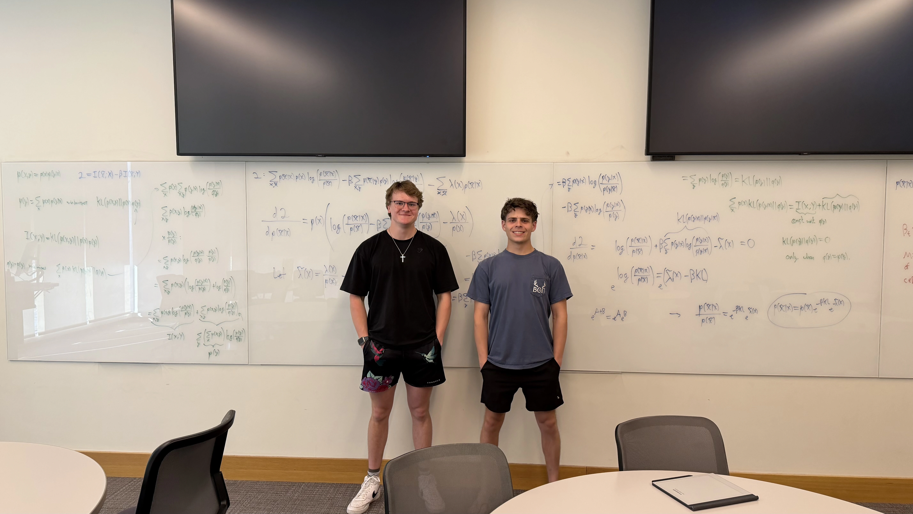
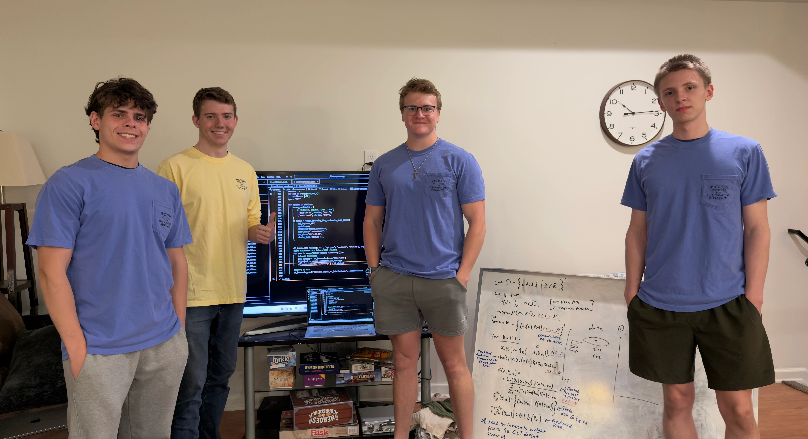
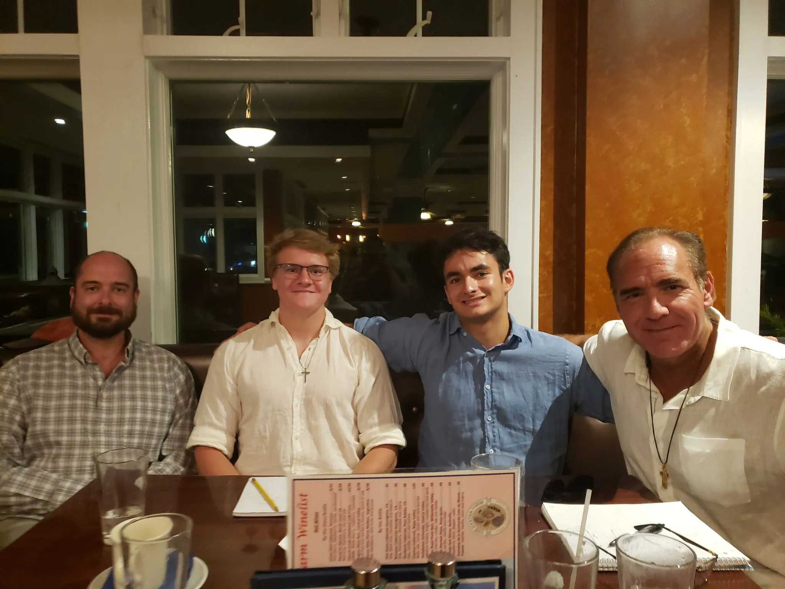

My name is Nicholas Harsell! Currently, I am an undergraduate student at James Madison University majoring in Mathematics and Quantitative Finance. Additionally, my broad passions led me to pick up minors in computer science, economics, computational analytics, and honors interdisciplinary studies, as well as university-sponsored research in theoretical development of algorithms and data collection through the College of Science and Mathematics and College of Business. My current focus is in machine learning (specifically information-theoretic learning and neural networks) and numerical analysis, with additional research/interest in constrained optimization, algorithm design, fractal geometry, PINNs, and other fun areas of computational mathematics. On this page, you can find my highlighted research experience, other extracurricular involvement, and some pictures from my time at JMU.
Upcoming Presentation: MathFest 2026
Mathematical Association of America | Boston, MA | August 5th - August 8th
I will be giving a contributed talk at MAA's MathFest 2026 this August! The abstract of this contributed paper session will be available online soon. The presentation itself is on my research with the OAT Lab on Frank-Wolfe algorithm development.
Research Experience
Aside from coursework, I've had the opportunity to contribute to mathematical research during my time at JMU. Listed below are some of the highlighted research experiences from my time at JMU!
Research Assistant
Optimization and Algorithmic Theory Lab
January 2026 - Present
Proving novel convergence results for block-iterative updates of split Frank-Wolfe algorithms (FWSAs) for convex and non-convex objectives
Formulating and proving lemmas regarding block-iterative updates of a product space relaxation problem to find solutions in an intersection of \(m\) constraint sets
Lead Quantitative Researcher
Madison Institute for Mathematical Finance (BIRCH Team)
April 2025 - Present
Leading a research project focused on developing new variational inference methods for information-theoretic machine learning
Exploring methods of optimizing neural network generalization on time-series data through regime changes, founded on proven results in rate-distortion theory
Planned and led 20 lectures for fellow researchers on linear algebra, probability, convex optimization, divergence measures, convergence, DSA, and generalization bounds
Research Assistant
JMU College of Business
May 2025 - August 2025
Designed and implemented data pipelines to collect, clean, and standardize large-scale market data from U.S. Independent System Operators (ISOs)
Constructed Parquet-based datasets containing decades of LMP data, enabling efficient querying and downstream statistical and financial modeling
Handled over 270 million rows of data across 27 years for statistical/financial analysis
Extracurricular Involvement
After specific research experiences, I've had the ability to serve the greater community through extracurricular involvement. Below are a few highlights!
Co-founder & President
Madison Institute for Mathematical Finance
April 2025 & April 2026 - Present
Co-created introductory content for new researchers, including topics in linear algebra, probability, numerical methods, real analysis, and measure theory
Planned, programmed, edited, and directed custom Manim animations as supportive content to help new researchers build intuition behind advanced math topics
Created organization structure, executed general body meetings, assured cooperation with university student organization policies
Administrative Coordinator
InterVarsity Christian Fellowship
December 2024 - December 2025
Served on the executive board of InterVarsity's largest chapter in the nation (600+ members)
Served on the PAC (President, Administrative Coordinator, Communications Coordinator) team to guide the greater executive team through event planning/execution and missions
Managed $25,000 in scholarship grants for three major conferences & retreats
Planned and led 80+ InterVarsity members in JMU's Freshmen Move-In
Eagle Scout
Boy Scouts of America
February 2016 - March 2023
Earned the rank of Eagle Scout in March 2023, recognizing years of service, leadership experience, and skill-building
Led an Eagle Scout Project, delivering 500lbs+ of non-perishable food to a local food pantry through a multi-stage food drive in Loudoun and Shenandoah County
Served as Senior Patrol Leader: planned weekly meetings, monthly campouts, and a week-long summer camp for one of the largerst troops in the nation (70 scouts, 30 adult leaders)
A View Into My Work
I've been able to participate in a multitude of endeavors, extracurricular or otherwise. I have participated in undergraduate research for both the College of Science and Mathematics (CSM), and the College of Business (COB).
Below are some pictures from my time as a student, research assistant, and student organization President/Vice President!

First MIMF Cohort, October 2025

InterVarsity Exec Retreat, December 2024

Madison Institute for Mathematical Finance Lecture, September 202540 out of 80+ volunteers, including JMU President James Schmidt, for InterVarsity's help with JMU's Freshmen Move-In, August 2025

Jack Zettlemoyer and I, BIRCH Team meeting, March 2026

(Left to right) Jack Zettlemoyer, Timothy Tarter, Nicholas Harsell, and Arsenii Herasymov. Working on code, September 2025

(Left to right) Blace Houle, Nicholas Harsell, Gunner Lyon, and Sean Tarter. Summer beach & in-person lecture trip, July 2025
Mathematical Research
Overview
The following projects are some highlighted current projects of mine; what separates these projects from my programming projects is a highlight in theoretical math development/understanding. Any good computational math project has programmed and reproduceable numerical experiments, but these projects run experiments in relatively unexplored (or entirely new) areas of analysis and machine learning.
Optimization and Algorithmic Theory Lab
Constrained Optimization • Linear Algebra • Real Analysis • Sequences
I am a Research Assistant for the Optimization and Algorithmic Theory (OAT) Lab, a grant-funded research endeavor in theory and application of optimization algorithms. Aside from the specific technical aspects previously listed, my work revolves around projection-free optimization methods to find numerically stable and fast algorithms for finding solutions to constrained optimization problems.
Reparameterization of the Information Bottleneck
Information Theory • Variational Inference • Rate Distortion Theory • Bayesian Methods
The information bottleneck characterizes the tradeoff between information compression and learning. It has notable uses in neural network training and, more recently, a potential ability to explain the generalization abilities of deep neural networks (DNNs). This is a proprietary project which explores a new view of a time-dependent tradeoff parameter for time-series learning, neural network training, and generalization guarantees through PAC-Bayes bounds. This project is under my work as Lead Quantitative Researcher At the Madison Institute for Mathematical Finance.
Numerical Analysis of Fractional Dimensions of Layered Perlin Noise
Python • Numerical Analysis • Computational Math
Perlin noise is a gradient noise algorithm used to generate smooth, seamless transitions across a plane. While typically used for virtual terrain generation, layering Perlin noise generations on top of one another (called octaves) approximates fractional Brownian motion (fBm). This project focuses on the computational methods for calculating the dimension of such processes, with potential implications to come. In the GitHub Repository linked below, you can find code to generate perlin noise with any fractal dimension between 2 and 3.
This project is slightly different from the rest; it is centered around the idea that visualizing advanced mathematics can assist students in learning most topics. This project was programmed in Manim, a Python library developed by Grant Sanderson (3Blue1Brown), and includes 30+ minutes of tailored animations for students learning linear algebra, real analysis, probability, stochastic processes, and multivariate calculus.
Programming Projects
Overview
In addition to developing an interest and experience in higher-level math, I also find myself programming various medium-sized projects in my free time. These range from numerical/mathematical libraries to Chess engines to this website, allowing me to gain experience in all sides of programming and development.
Python Chess Engine
Primary Language: Python
I've always been a player of chess at some level. Exploring move sequences and tactical positions with friends was a rewarding past-time. However, the purpose of this project was to challenge myself and push my ability to write highly optimized code. This project uses no libraries and no languages outside of Python; the game engine, neural network architecture, training process, pruning logic, and game algorithms are all hand-crafted.
In particular, Python integers are arbitrary-precision (they never overflow). Standard chess
engine magic numbers, including those attributed to Pradyumna Kannan, are discovered by random search under C's implicit 64-bit multiplication overflow, and silently fail for certain squares when ported to Python. This project
contains what appears to be the first published set of magic numbers found and validated under non-overflowing arithmetic, verified by perft testing against known node counts.
Combining my experience with linear algebra and my desire to master C++, I created a linear algebra library in C++. This includes simple computations such as inner products, L2 norms, and matrix products; it also includes efficient methods to compute eigenvectors/eigenvalues, decompositions (spectal, SVD, LU), and more. Most importantly, this project focuses on efficient storage of data.
Topological Data Analysis (TDA) is an explored area, but it still has plenty of benefits in nearly every industry. This project is an exploration for my own knowledge of the inner workings of persistent homology, a tool ubiquitous with TDA.
Favorite Coursework
Overview
I had the opportunity to complete 40 college credits in high school, allowing me to enroll in far more major- and minor-specific courses during my time at JMU. Listed here are a few of my favorites, due to their unique impact, utility, challenge, and/or inspiration.
Groups, homomorphisms, isomorphisms, roots of unity, symmetric/dihedral groups, permutation matrices, fundamental homomorphism theory, quotient/factor groups, rings, integral domains, fields
Mathematical Finance
Probability measures/spaces, expectation, stochastic calculus, Ito's Lemma, derivation of the fundamental PDE/Black-Scholes closed-form, risk-neutral measures
Get In Touch
If you're working on something interesting in computational research, I want to hear about it! I'm actively looking for opportunities in both academia and industry; send me a message on LinkedIn or by email and I'll get back to you soon.
Current research interests
Deep Neural Network TrainingPINNsInformation-Theoretic LearningFractal GeometryConstrained Optimization